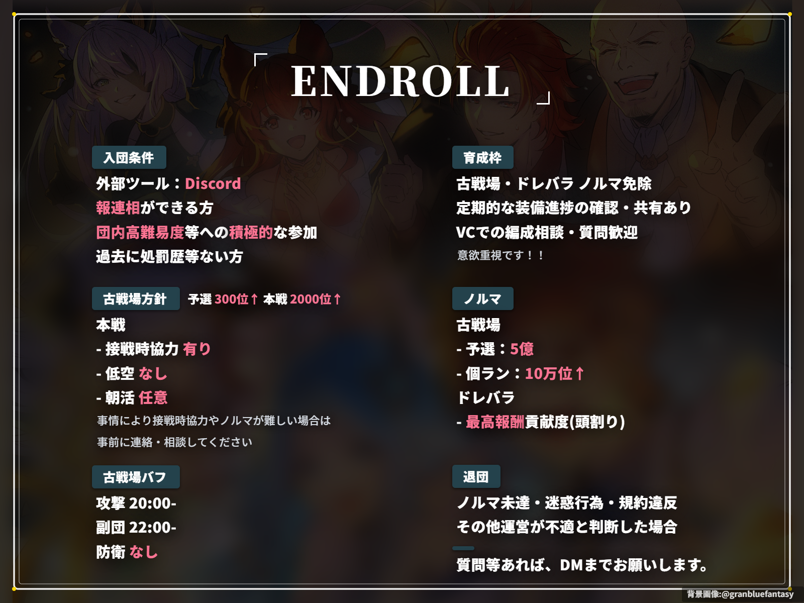

GRANBLUE FANTASY SCOUT | 騎空団「ENDROLL」
団活スカウト文面マネージャー
騎空団「ENDROLL」スカウト文面・Xスパム判定防止ローテーション管理

勧誘バナー画像（全5種・ランダムコピー）
ワンクリックで5種類の勧誘画像からランダムにクリップボードへ画像データをコピーします。 X（旧Twitter）の投稿画面でそのまま貼り付け（Ctrl+V）が可能です。
現在の選択: endroll_banner_01.png
クイック即時コピー
ノルマ免除 / 装備進捗共有 / VC相談歓迎
現在最少: 0回
ノルマ免除 / 定期的な装備進捗確認・共有 / VC質問歓迎
現在最少: 0回
予選300位↑ / 予選5億 / 低空なし / VC活発
現在最少: 0回
予選300位↑・予選5億・個ラン10万位 / ドレバラ頭割り / VC積極参加
現在最少: 0回